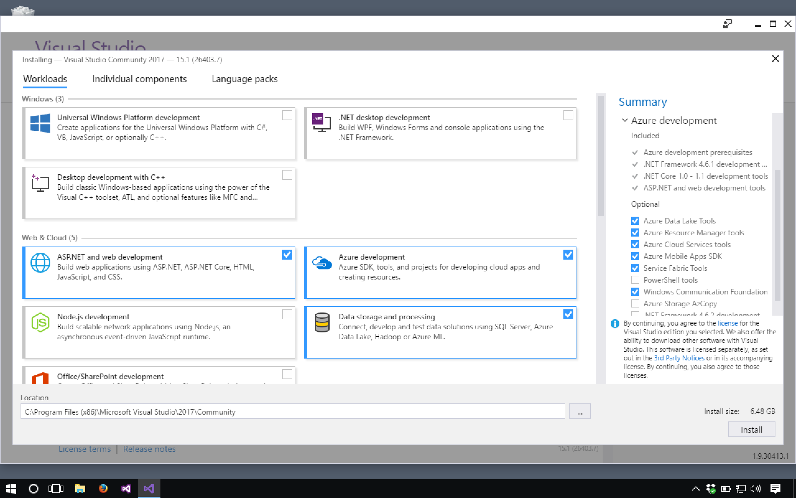
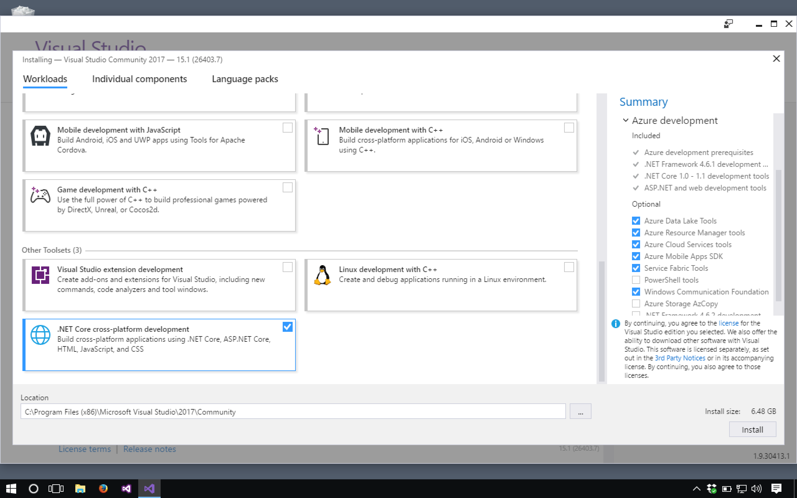
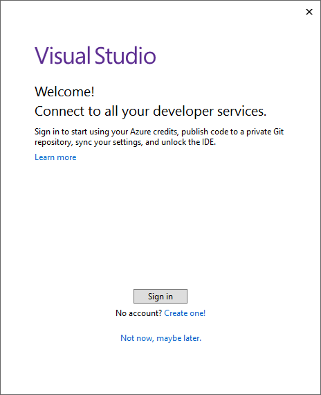

14.2. Windows Users: Visual Studio Community Edition¶
Download the Community version of Visual Studio from this page.
Note
Users can select from multiple options for software downloads, such as Visual Studio Code and Visual Studio for Mac, on this page. Do NOT select either of these options!
Allow at least an hour for the installation process.
Run the installer, and select the following packages from the Workloads pane:
- ASP.NET and web development
- Azure development
- Data storage and processing
- .NET core cross-platform development
Your selections will look like these screens:
VS install ASP.NET and web development, Azure development, and data storage and processing packages.¶
VS install .NET core cross-platform development package.¶
When the install finishes running, Visual Studio will open by default.
Sign in to an existing Microsoft account or create a new one to take advantage of the Community Edition.
Visual Studio welcome window.¶
The launcher window will prompt you with some choices via a window similar to what you see below. Select the displayed options. (If you don’t see the box about applying customizations, don’t worry about it, just proceed.)
Finally, you have made it to the project selection window. This will be the item you will see when you open Visual Studio. You do not need to create or open a new project just yet.

VS Windows Project Opener¶
{kind=link}
Note
If you fail to install one or more of the required packages, you can do so by closing Visual Studio and running the installer again. Select Modify in the Visual Studio section of the window, and then select the additional package(s) to install.
Warning
If you don’t have this most recent version of Visual Studio installed, you will need to install it via the instructions above.
If you have a pre-existing Visual Studio install, you may need to install the .NET Core Tools package. To do so, follow the instructions provided by Microsoft.
14.2.1. Connect to GitHub for Windows Users¶
Visit this page to download and install the GitHub Extension for Visual Studio.